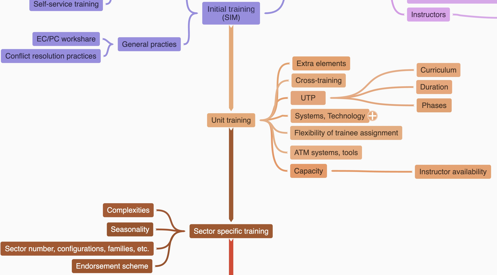

Unit training and operational qualification
Unit training turns initial preparation into competence in a specific operational environment. The study identifies instructor availability and training throughput as major constraints.
Unit training and its phases

The next major step in the ATCO management cycle is unit training. This is an umbrella term which covers various training modules. The common denominator across these modules is that they aim to transform ATCO students into fully functional, operational, licensed ATCOs.
In our logical model, we differentiate between the general and sector-specific parts of unit training. This is to mirror the distinction between ATCO licences and sector endorsements, and to provide greater granularity and insight into the decisions and parameters that affect the training process and, ultimately, the entire ATCO management cycle.
The first part of the unit training focuses on transforming the general skills and capabilities mastered by ATCO students during initial training into those specific to the local operational environment. This entails learning operational procedures, familiarising oneself with the geographical environment, getting used to the controller working position, learning national regulations and requirements, and other local specifics.
The unit training typically comprises a transitional phase, a simulator training phase, and an On-The-Job training phase.
The primary parameters of the unit training phase are very similar to those discussed under the sections on initial training. ANSPs define a Unit Training Plan that details the curriculum, duration requirements, and phases of the training modules, among other relevant parameters. As with initial training, these parameters vary widely across ANSPs and Member States; for example, training duration ranges from 3 months to 3 years, and success rates range from 36% to nearly 100%.
Unit-training flexibility involves many of the same choices as initial training, within a more specific operational environment and typically longer training period.
An aspect that is even more pronounced in unit training is the capacity for training and the availability of instructors. During most of the unit training, and especially during the On-The-Job (OJT) phase, instructors must be ATCOs with valid licences. This diverts resources from operational duties, temporarily reducing the ATS unit's capacity. In fact, the availability of OJT instructors is the limiting factor of the overall training capacity for most ANSPs. This may create a negative training spiral for ATS units with significant ATCO shortages, as diverting resources from operations exacerbates short-term capacity shortages.
Finally, all considerations about training systems and technology also apply to the unit training. While European regulation requires a certain amount of training on systems identical to those in use for live operations, simulation exercises remain part of the unit training curriculum, and nothing prohibits the use of additional training tools and methodologies. However, as we have seen for the initial training, these aspects are culturally embedded, and also depend heavily on the interpretation of EU regulation and local legislation.
Extra elements
The unit training sometimes includes additional elements which are not required or prescribed by EU regulations. Such elements include pre-transitional phases and specific national training blocks.
Pre-transitional phases are typically introduced when the gap between the skill set required to start unit training and that acquired by ATCO students during their initial training becomes unmanageable within the transitional and OJT phases, potentially compromising the success and quality of unit training. This may happen due to a misalignment between the unit and the initial training curricula, which can be a negative byproduct of outsourcing and privatisation of initial training (though it can also occur in fully integrated environments). Examples of this have been observed in Spain following the privatisation of initial training. However, the gap may also be due to the relatively high complexity of the ATS unit's operational environment, which requires additional training before ATCO students can properly enter unit training.
Some Member States (e.g., Austria) also add a national training phase between initial and unit training, covering locally specific requirements, organisational aspects, and institutional setup, among other areas.
ATM systems and tools
The ATM systems, ATC tools, and, in general, the technical and operational environment are among the most important aspects of unit training. ATCO students need to learn and master the operation of the ATM systems operational at the ATS unit, need to gain confidence in using the tools available to support their work, and establish routines, habits, and mental models that enable them to operate safely. This means that the level of sophistication in ATM systems may increase the duration of unit training, as students need more time to learn additional functions. On the other hand, these additional functionalities may result in capacity and ATCO productivity gains throughout the ATCO's career.
It is reasonable to expect that this aspect of unit training will receive even more focus as more ATM functionalities are introduced into ATM systems, unless the level of automation increases and the development of ATM user interfaces enables workload reductions.
Cross-training
Cross-training is a specific case of unit training in which the student entering the training process already holds a valid ATCO licence from a different ATS Unit. Cross-training may occur within an ANSP, for example, by training aerodrome controllers to become approach or area controllers. Cross-training is also necessary when an ATCO with a valid license transitions between ATS units, even if they are moving between units of the same kind (i.e. ACC to ACC).
Cross-training becomes increasingly important when cross-border operations, ATCO mobility and ATS delegation are considered.
Unit-training challenges and measures
Unit training prepares a trainee to operate independently in a specific environment. It includes transitional training, simulation, OJT, validation and the related instructor and assessor resources. Sector-specific training and endorsement addresses the additional qualifications required for particular sectors, families or clusters.
Unit Training was the only area classified as High in both Incidence and Severity. It emerged as the principal bottleneck in the management cycle.
The consultation process revealed broad agreement among ANSPs regarding the critical role of instructor availability and training capacity in determining workforce growth. Stakeholders consistently emphasised that increasing recruitment alone is insufficient if the training system lacks the resources required to qualify additional controllers. There was also widespread recognition that training and operations compete for many of the same resources, meaning that periods of operational pressure can directly affect training throughput.
However, differences emerged regarding the organisation of unit training, the degree of flexibility available within training programmes and the balance between operational and training priorities. While some ANSPs have introduced measures to protect training capacity, others remain heavily constrained by operational requirements or regulatory arrangements governing training progression and validation.
The challenges identified within Unit Training are primarily associated with capacity constraints and the inherent difficulty of scaling training activities within operational environments. Unlike earlier stages of the training process, where capacity can be increased through additional classroom or simulator resources, Unit Training depends directly on operational positions, instructors and live traffic environments that must simultaneously support both training and operational service delivery.
Challenges reported in Unit training (Source: Consortium assessment)
| ID | Challenge | Rationale | ANSPs reporting |
|---|---|---|---|
| TL-UT.1 | Limited availability of qualified instructors | Unit training requires significant involvement from qualified instructors and assessors. Limited instructor availability directly constrains the number of trainees that can progress through the training process. | 7 (41%) |
| TL-UT.2 | Training activity displaced by operational demand | During periods of high traffic demand, instructors are frequently required to prioritise operational duties, resulting in delays or interruptions to training activities. | 6 (35%) |
| TL-UT.3 | Training capacity constraints limiting workforce expansion | Increasing recruitment does not automatically increase the number of qualified controllers if the unit training system lacks sufficient capacity to absorb additional trainees. In such circumstances, trainees accumulate within the pipeline without increasing operational output. | 5 (29%) |
| TL-UT.4 | Limited flexibility within training and validation requirements | Fixed training-hour requirements and rigid validation processes reduce the ability of ANSPs to adapt training programmes to changing operational circumstances and trainee performance. | 5 (29%) |
| TL-UT.5 | Competition between training and operational capacity | On-the-job training requires instructors to dedicate operational time to training activities. As a result, training throughput is inherently linked to the availability of operational resources. | 4 (24%) |
Unit-training constraints affect how many trainees become operational controllers and when they are available. This explains their central role in the key-area assessment.
The most significant challenges relate to instructor availability and the competition between training and operational activities. Stakeholders repeatedly emphasised that training capacity, rather than trainee availability, constitutes the primary constraint on workforce growth. Several ANSPs highlighted that increasing recruitment without simultaneously expanding unit training capacity simply creates larger trainee backlogs rather than producing additional controllers.
The consultation also revealed the structural nature of many of these constraints. Instructor resources are limited, training activities are frequently suspended during periods of operational pressure, and the one-to-one nature of OJT makes it difficult to increase throughput without consuming operational capacity. At the same time, rigid training and validation arrangements may reduce the flexibility available to ANSPs when attempting to adapt training activity to changing operational conditions.
Taken together, these findings demonstrate that workforce shortages cannot be addressed through recruitment measures alone. The ability of the training system to convert trainees into ATCOs ultimately depends on the capacity, efficiency and flexibility of Unit Training, making it one of the most influential stages of the ATCO management cycle.
The identified solutions focus on increasing the capacity and flexibility of Unit Training while reducing the competition between training activities and operational service provision. Most measures seek to optimise the use of instructor resources, improve training throughput and reduce unnecessary delays in trainee progression.
Main solutions for Unit training (Source: Consortium assessment)
| ID | Solution | Challenges addressed | Time horizon | Control over the solution | Model variables affected |
|---|---|---|---|---|---|
| TL-UT.BP.1 | Establish dedicated management of instructor roles and workloads | TL-UT.1 TL-UT.2 TL-UT.5 | Medium | Internal + External | Training capacity Utilisation |
| TL-UT.BP.2 | Align training activities with lower operational demand periods | TL_UT.2 | Short | Internal | Training capacity Utilisation |
| TL-UT.BP.3 | Introduce structured intervals between training cohorts | TL-UT.1 | Medium | Internal | Training capacity |
| TL-UT.BP.4 | Introduce greater flexibility in OJT-hour requirements | TL_UT.4 | Medium | Internal | Training duration |
| TL-UT.BP.5 | Increase the use of advanced simulation during unit training | TL-UT.2 TL-UT.4 TL-UT.5 | Medium | Internal | Training capacity |
| TL-UT.FP.1 | Adopt competency-based progression models | TL_UT.4 TL_UT.5 | Short | Internal + External | Training duration Utilisation |
| TL-UT.FP.1 | Expand the pool of qualified and available instructors and assessors (e.g. third country licenses) | TL_UT.1 TL-UT.2 TL-UT.5 | Medium | Internal + External | Training capacity |
| TL-UT.FP.3 | Implement modular unit-training pathways | TL_UT.3 TL_UT.4 | Medium | Internal | Training duration Training capacity |
The identified solutions recognise that the principal challenge facing Unit Training is not the availability of trainees, but the limited capacity of the system to qualify them efficiently. Consequently, most measures focus on improving Training Capacity, while a smaller number seek to reduce Training duration and increase the flexibility of training delivery.
Several best practices aim to increase the availability and efficiency of instructor resources. Dedicated management of instructor roles and workloads, coordinating training activities with lower-demand periods, and measures to reduce instructor fatigue all aim to protect training capacity from operational pressures and ensure training activities can continue consistently over time. These approaches directly address the instructor bottlenecks highlighted throughout the consultation process.
A second group of solutions seeks to reduce the operational burden associated with training. Greater use of advanced simulation technologies and more flexible OJT requirements allow trainees to acquire competencies without relying exclusively on live operational environments, thereby reducing the competition between training and service provision. These measures also improve the scalability of training systems and facilitate the expansion of training activity when additional workforce production is required.
The future practices build on the same principles by introducing more fundamental changes to the organisation of training. Competency-based progression models and modular training pathways seek to move away from rigid time-based approaches and allow training programmes to better reflect individual trainee performance. Similarly, expanding the pool of qualified and available instructors and assessors would help alleviate one of the most significant constraints identified across the entire ATCO management cycle.
Taken together, the identified solutions are among the most directly linked to future workforce availability. Given the position of Unit Training at the end of the ATCO production pipeline, improvements in training capacity and throughput have the potential to generate substantial benefits for controller supply across the projection period.